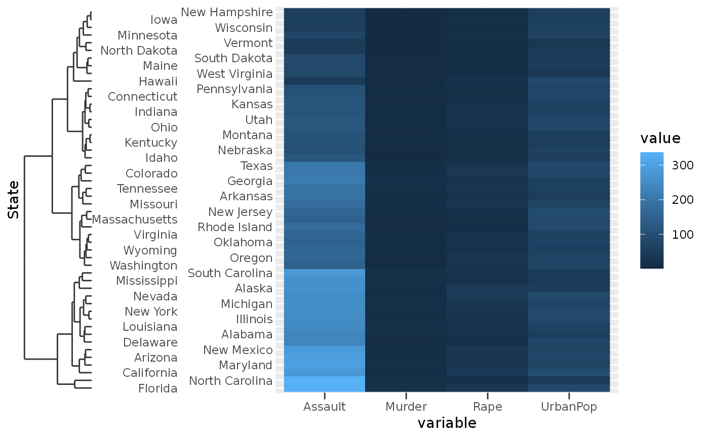

Visual representation of a discrete variable with hierarchical relationships
between members, like those detailed in
scale_(x|y)_dendrogram).
guide_dendro( title = waiver(), check.overlap = FALSE, n.dodge = 1, order = 0, position = waiver(), dendro = waiver() )
Arguments
| title | A character string or expression indicating a title of guide.
If |
|---|---|
| check.overlap | silently remove overlapping labels, (recursively) prioritizing the first, last, and middle labels. |
| n.dodge | The number of rows (for vertical axes) or columns (for horizontal axes) that should be used to render the labels. This is useful for displaying labels that would otherwise overlap. |
| order | Used to determine the order of the guides (left-to-right, top-to-bottom), if more than one guide must be drawn at the same location. |
| position | Where this guide should be drawn: one of top, bottom, left, or right. |
| dendro | Relevant plotting data for a dendrogram such as those returned
by |
Value
A dendroguide class object.
Details
The dendrogram guide inherits graphical elements from the
axis.ticks theme element. However, the size of the dendrogram is
set to 10 times the axis.ticks.length theme element.
Examples
clust <- hclust(dist(USArrests), "ave") df <- cbind(State = rownames(USArrests), USArrests) df <- reshape2::melt(df, id.vars = "State") # The guide function can be used to customise the axis g <- ggplot(df, aes(variable, State, fill = value)) + geom_raster() + scale_y_dendrogram(hclust = clust, guide = guide_dendro(n.dodge = 2)) # The looks of the dendrogram are controlled through ticks g + theme(axis.ticks = element_line(colour = "red"))# The size of the dendrogram is controlled through tick size * 10 g + theme(axis.ticks.length = unit(5, "pt"))